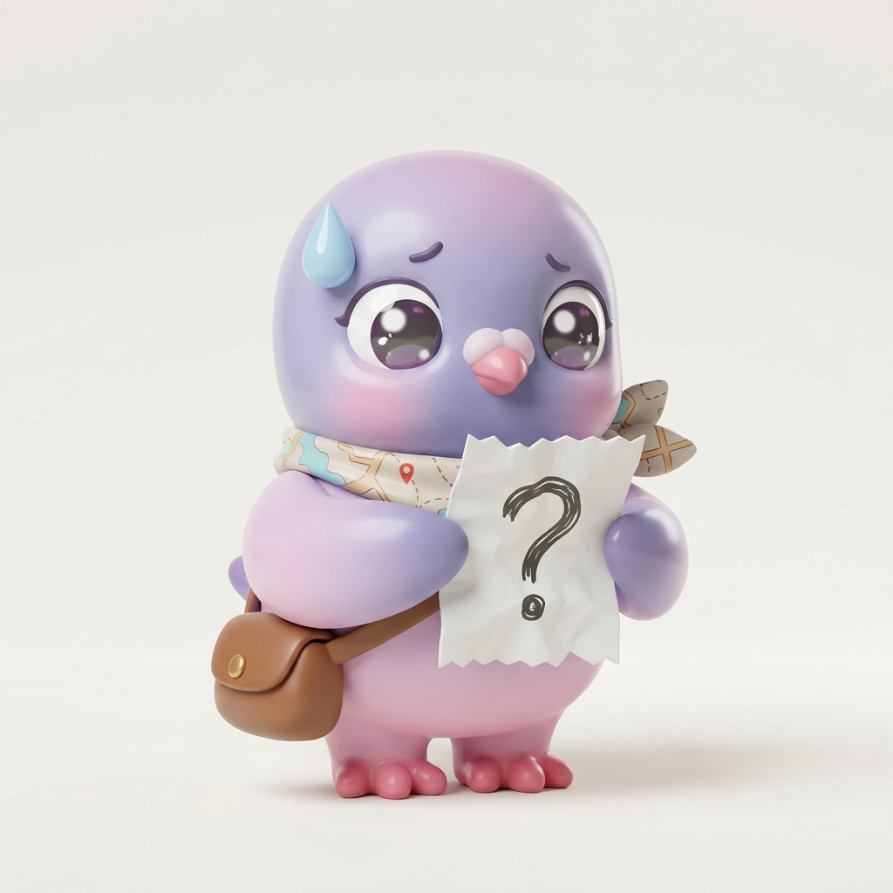
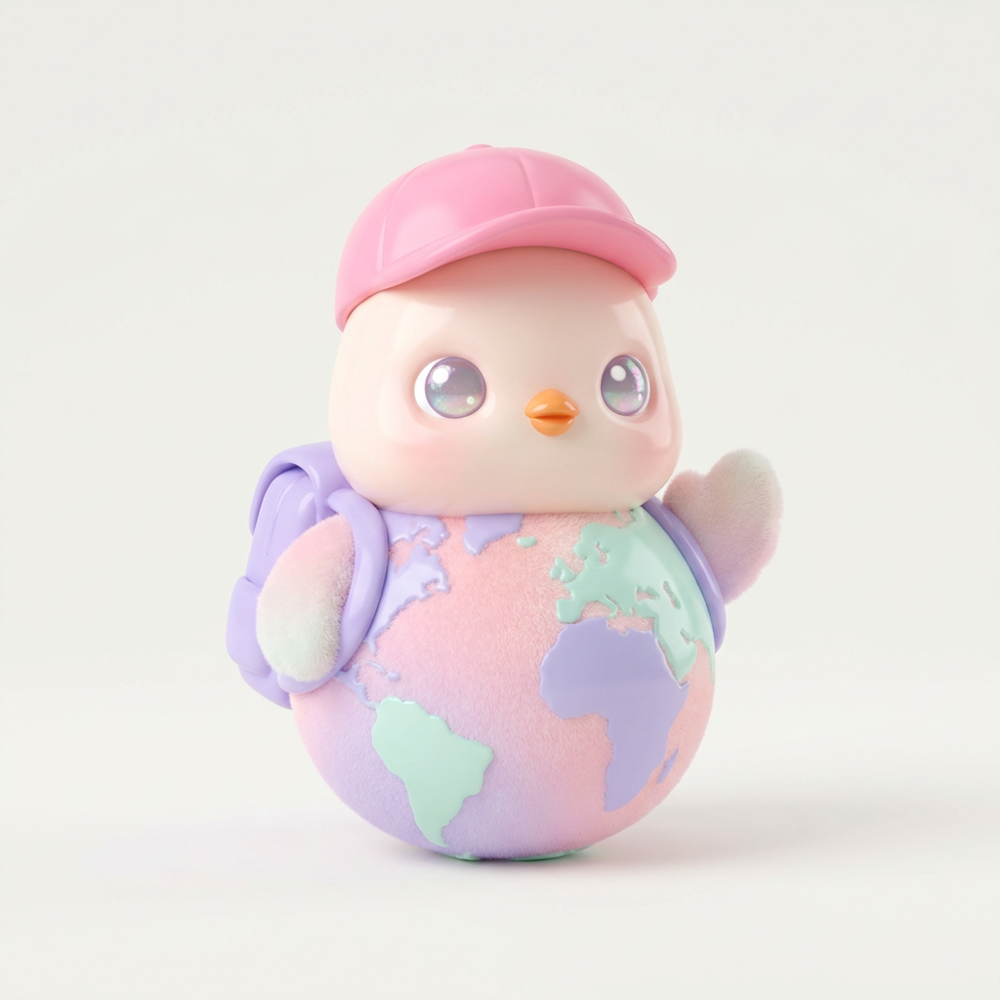
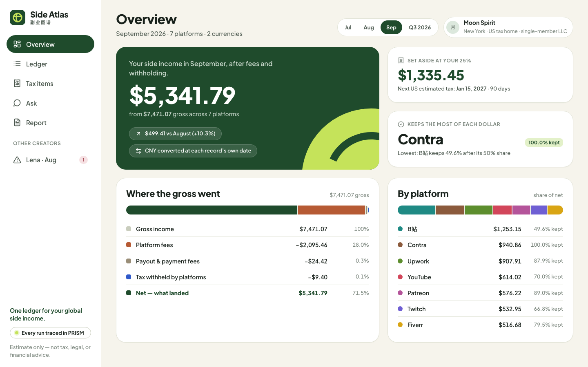
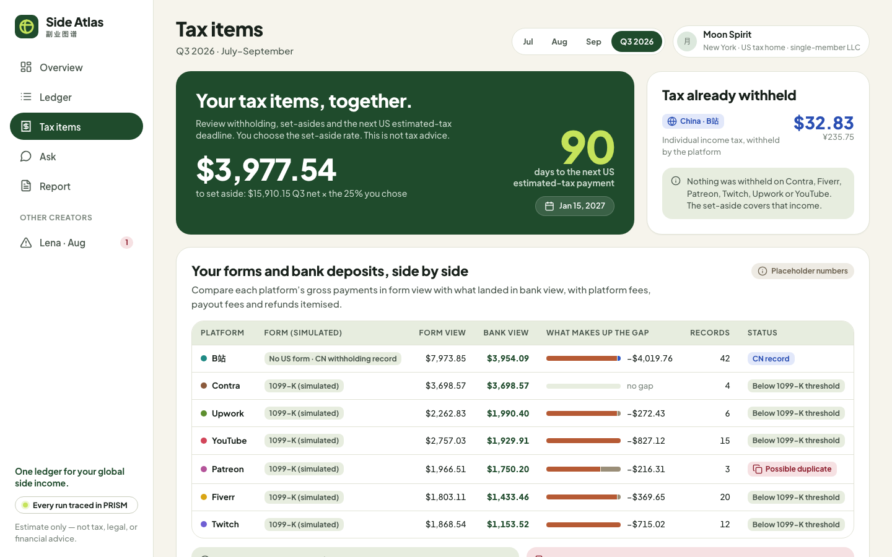
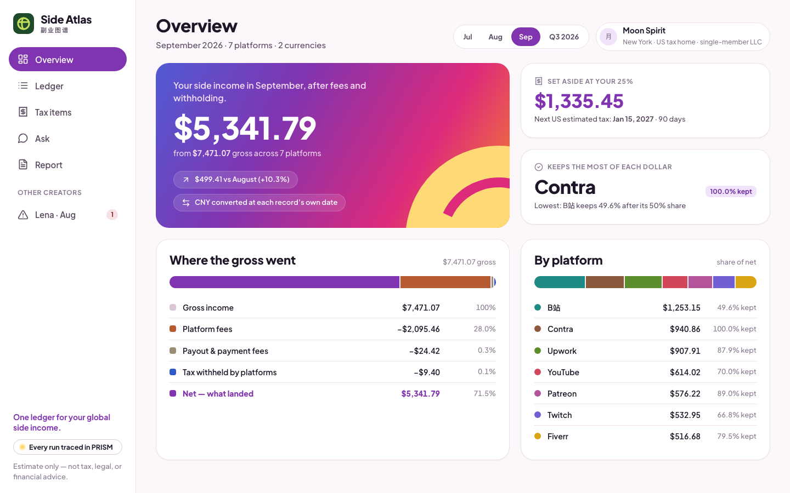
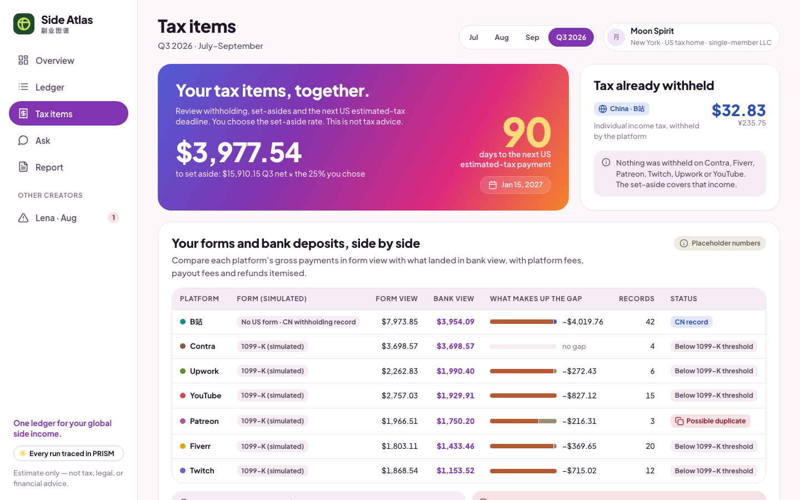
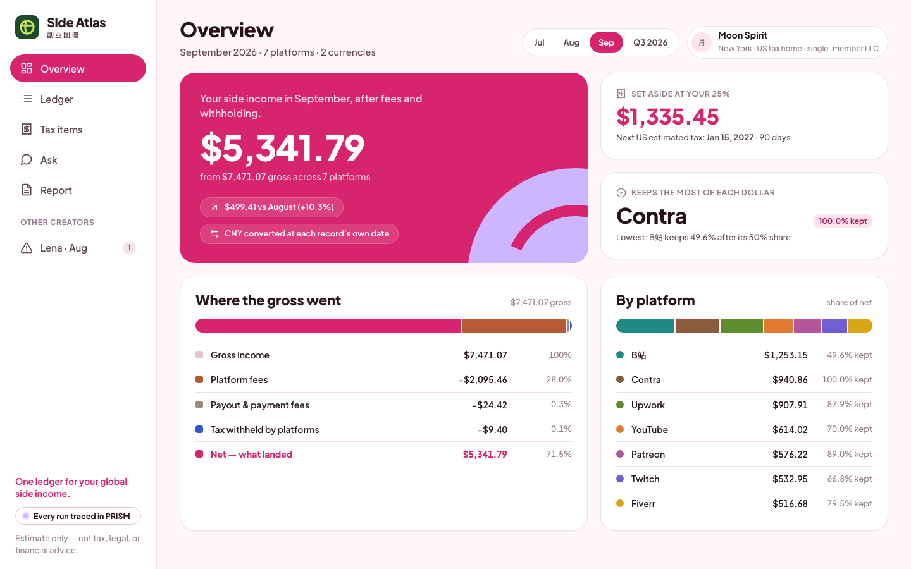
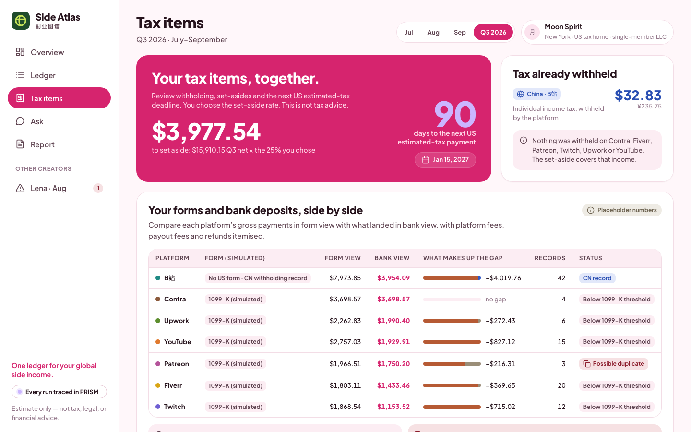
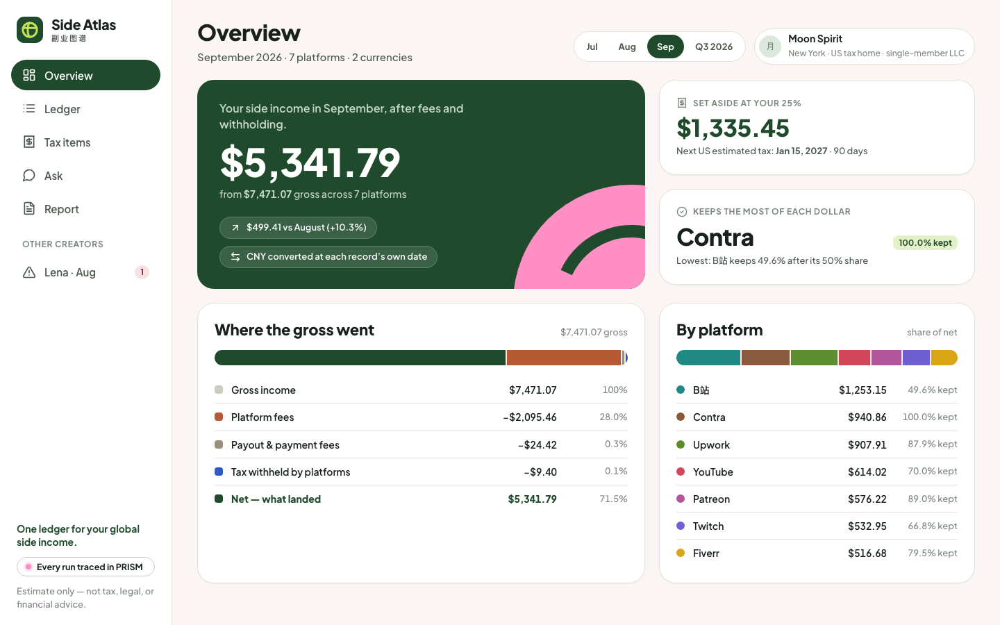
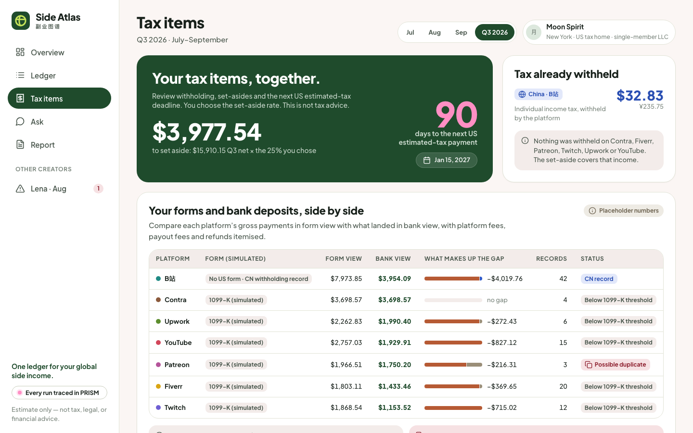

Side Atlas · 配色和吉祥物对比
同一个原型，只换颜色变量。每套都截了"总览"和"税务事项"两页。吉祥物用 Nicrron 上的 Google nano-banana 图片模型生成，泡泡玛特盲盒风。数字都是测试数据里的真实计算结果。
吉祥物方案
猫头鹰不做（太像多邻国）。"候鸟小燕子"连试三次都被平台删掉了输出，先不放。
 ① 信鸽 Atlas · 开心背着装满各国硬币的小邮包、系地图围巾：全球的钱飞回来。淡紫 + 粉。
① 信鸽 Atlas · 开心背着装满各国硬币的小邮包、系地图围巾：全球的钱飞回来。淡紫 + 粉。
① 信鸽 Atlas · 发愁同一只鸽子的第二个表情：用在"缺汇率、计算停止"这类提醒里。
② 地球小鸡身体是一颗毛绒小地球，戴粉色棒球帽、背小书包，在挥手。粉 + 薰衣草紫 + 薄荷绿。吉祥物会出现在：首页打招呼、AI 问答的头像、空状态（还没导入数据）、"计算停止"提醒（发愁表情）、季度预留存够时的庆祝、月报封面。正式版会抠成透明背景，再出 3–4 个表情。
配色方案
稳重、可信，像一本账本；和粉紫色的吉祥物搭配会有点"错位"。


主色块用 Instagram 那种渐变，按钮、数字用紫色。最有创作者感；风险是太像 Instagram 本身。


紫色当主色、粉色点缀，有创意又不失专业；和信鸽、地球小鸡的颜色最搭。


粉色当主色，最"泡泡玛特"；但粉色大块配财务数字，评委可能觉得不够严肃。


保留现在的绿色主块，只把亮绿点缀换成粉色：折中方案。

